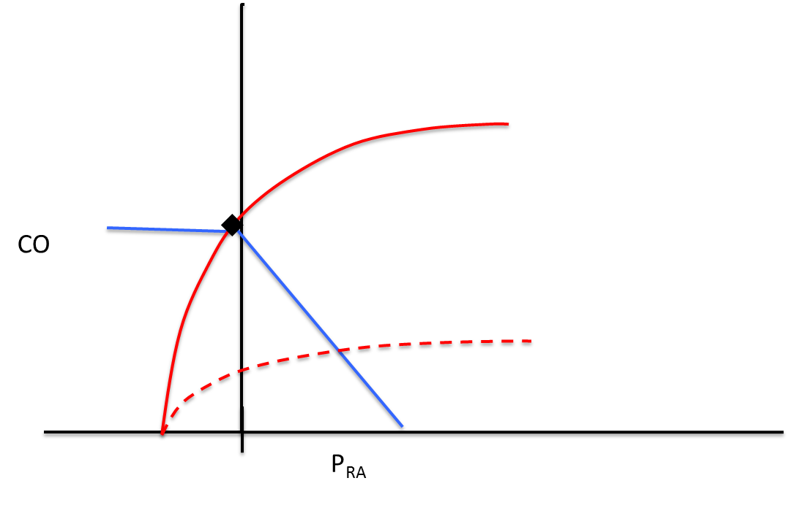
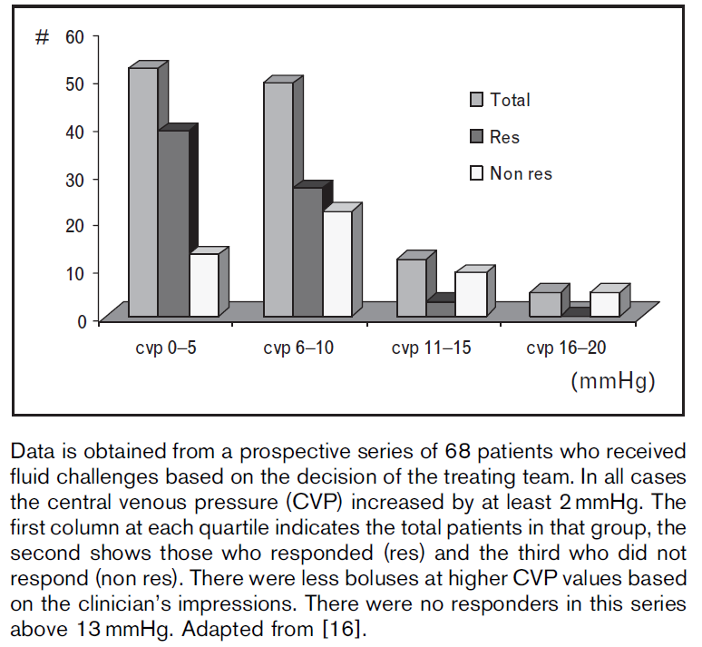

Module N8
Put it together
Everything so far, the definition of shock, oxygen delivery, the bedside read, the curves, the grid, and the catheter, comes together on one patient. A 79-year-old woman arrives with a day of abdominal pain and nausea. Her history includes atrial fibrillation and coronary disease, and she takes warfarin and metoprolol. Her heart rate is 120, her pressure is 75/45 for a mean of 65, her respiratory rate is 18, and her temperature is 35.1 degrees. Her lungs are clear and her abdomen is soft but tender in the right lower quadrant. The point of walking this case is not the diagnosis at the end; it is to notice, consciously, how we think about the hemodynamics and the process that gets us there.

The method: A.C.T.
The whole pathway reduces to one deliberate loop. It is not a novel way to think, but it is a conscious one, which is exactly what forces you to make sense of the data you have and then name precisely what you are looking for next.
Assess
Start the B.U.S. screen. Her mental status is intact but her pressure is soft, she is tachycardic, and her skin read is unreassuring. Shock is present, and the etiology is not obvious. That is precisely the situation the advanced hemodynamic evaluation is built for, so we move on to a hypothesis rather than reaching reflexively for fluids.
Create a hypothesis: sepsis, on the curves
She is elderly, tender, and possibly infected, so distributive shock is a reasonable first guess. Before ordering anything, predict what sepsis should do on the curves. Venous capacitance rises as small veins dilate, shifting stressed volume into unstressed volume and pulling the venous-return curve down and left; the catecholamine response then lifts the cardiac-function curve up and left, and the dilation of large veins shortens venous time constants and augments return, dragging output back toward or above normal. The physiologic prediction is a low filling pressure with a preserved or high cardiac output.
Now translate that prediction into numbers you can measure. Every interface obeys the same form, a pressure drop equal to a resistance times the one flow they all share:
Pcrit − MSFP = arteriolar R × CO
MSFP − RAP = VR × CO
mean PAP − LAP = PVR × COEach type of shock leaves its own fingerprint on the measurable terms of these four equations.
| Shock type | MAP | CO | RAP | PAPm | LAP | SVR |
|---|---|---|---|---|---|---|
| Cardiac (LV) | ↓ | ↓ | ↑ | ↔/↑ | ↑ | ↑ |
| Obstructive (RV) | ↓ | ↓ | ↑ | ↑ | ↔ | ↑ |
| Distributive | ↓ | ↔/↑ | ↓ | ↔ | ↔ | ↓ |
| Hypovolemic | ↓ | ↓ | ↓ | ↔ | ↔ | ↑ |
MAP is low in every column, so it cannot discriminate. Pcrit, mean PAP, and LAP need invasive or advanced tools, so set them aside for now. That leaves flow, filling, and tone: cardiac output, right atrial pressure, and systemic resistance. A low RAP would narrow her to distributive or hypovolemic, but cardiac output separates distributive shock from every other type at once, so it is the highest-yield thing to measure first. The habit is the point: let the Starling and Guyton curves tell you what you presume will happen, then pick the one parameter whose value would prove or break that presumption.
Test
We test flow. Bedside echo gives a cardiac output by velocity-time integral of about 4 L/min, and the ventricle looks grossly normal in size and function. That number does not fit the hypothesis. Distributive shock predicted a preserved or elevated output, and hers is low. The test refuted the guess, which is a success, not a failure, because it converts a guess into data. (Note that cardiac output measured by thermodilution and Fick agree poorly with one another, so any single flow number is a directional read to corroborate, not a decimal to trust.)
Reassess: the loop turns
You are never done after one pass; you move back and reassess. New information arrives: the family reports recent falls at home, and she is anticoagulated on warfarin. A low output now points away from distributive shock and toward either a failing pump, cardiogenic or obstructive, or hypovolemia from occult bleeding. Both of those give a low cardiac output, so flow can no longer separate them. What splits them is the right atrial pressure: pump failure backs blood up and raises RAP, while hypovolemia drains the reservoir and lowers it.

How far to trust the right atrial pressure
Before we measure it, be honest about what the number can and cannot do, because this is where people get into trouble. Ask first what your goal is: to determine the current RAP, or to predict volume responsiveness. For etiology, RAP is genuinely useful, a high filling pressure fits a failing pump and a low one fits an empty tank. As a rule of thumb, above 10 mmHg reads as high and suggestive of cardiogenic shock, below 5 mmHg as low and suggestive of hypovolemic or distributive shock, with the caveat that PEEP, obesity, pulmonary hypertension, and intra-abdominal pressure all shift the number.
For volume responsiveness, the number is far weaker, and the asymmetry matters. A high RAP does suggest the ventricle is near the flat top of its curve and unlikely to reward more volume. A low RAP tells you almost nothing, because you cannot see where the flat portion of that patient's venous-return curve begins.

"My attending told me never to use the CVP." A static filling pressure read alone is like interpreting a PCO2 with no pH. In the right context, with a clear goal and other parameters alongside it, it is informative. So: if the RAP is high, a patient is less likely to be volume responsive; if it is low, you have no conclusion, and any fluid challenge should be backed by a measured change in output rather than a hope.
Now we measure. The central line reads a CVP of 1, the inferior vena cava is flat on echo, a bruise is forming on her hip, and her hemoglobin returns at 5.5, down from 9 a month ago. Low filling pressure, a source, and falling red cells: this is hemorrhagic, hypovolemic shock.
From diagnosis to therapy
The loop does not stop at the label; the same discipline governs treatment. The instinct is to give blood and fluid, but that casual step makes an implicit assumption about how she will respond, so run A.C.T. on the intervention too. Nothing suggests her cardiac-function curve is flat, so the hypothesis is that transfusion slides the venous-return curve up and to the right, raising the filling pressure and the output together, while restoring hemoglobin lifts delivery directly:
Then test it. Watch the MAP, the RAP, and the cardiac output move after the challenge rather than assuming they did. Assess, create a hypothesis on the curves, test with one measurement, then reassess and let the answer restart the loop: that is the entire method, and it is HemoSim in a single patient. On the simulation day you will run this same loop across six deliberately different cases, hypovolemic, septic, cardiogenic, severe mitral regurgitation, decompensated right-ventricular failure, and cirrhotic decompensation, each one a fresh turn of Assess, Create, Test.
References
- Magder S, Bafaqeeh F. The clinical role of central venous pressure measurements. J Intensive Care Med. 2007;22(1):44-51.
- Funk DJ, Jacobsohn E, Kumar A. The role of venous return in critical illness and shock. Crit Care Med. 2013;41(1):255-262.
- Rivers E, Nguyen B, Havstad S, et al. Early goal-directed therapy in the treatment of severe sepsis and septic shock. N Engl J Med. 2001;345(19):1368-1377.
- Comparison of thermodilution and Fick cardiac output in critically ill patients. Am J Respir Crit Care Med. 1999;160(2):535-541.
- Sylvester JT, Goldberg HS, Permutt S. The role of the vasculature in the regulation of cardiac output. Clin Chest Med. 1983;4(2):111-126.
- Rola P, Kattan E, Siuba MT, et al. A Holistic Four-Interface Conceptual Model for Personalizing Shock Resuscitation. J Pers Med. 2025;15(5):207.